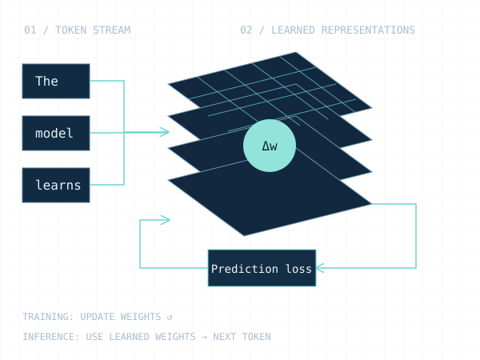

Change the weights.
Examples → prediction error → parameter updates.
Development consumes data, experiments, time, energy, and human expertise.
AIML–501 / MODEL DEVELOPMENT / IWU
From raw data to intelligence.
The training pipeline, resources, and real costs of generative AI—made visible.
Explore the training journey ↓
01 / THE BIG PICTURE
A generative large language model produces text by learning statistical relationships among tokens. Transformer attention connects information across a context; repeated prediction and optimization adjust its weights. Diverse data supplies examples, while computation makes learning from them possible. [6][2]
Examples → prediction error → parameter updates.
Development consumes data, experiments, time, energy, and human expertise.
Prompt → model computation → generated response.
Serving creates recurring resource costs; a conversation does not ordinarily retrain the model.
02 / THE TRAINING PIPELINE
Select a stage to trace its inputs, outputs, and cost drivers. This is a teaching framework: teams iterate, overlap activities, and use different post-training recipes.
READ LEFT TO RIGHT, THEN CONTINUE ↓
ACQUIRE
A useful model starts with a defensible collection of data. Define domains, languages, permissions, and provenance before ingestion. [1]
PREPARE
Remove duplicates, filter low-quality material, and isolate evaluation data. A tokenizer converts text into reusable token IDs. [1]
DESIGN
Choose layers, attention, width, vocabulary, and context handling. Initialize trainable parameters and test the configuration at smaller scale. [6]
PRETRAIN
Predict the next token, measure prediction error, backpropagate gradients, and update weights across repeated batches. [2]
ALIGN
Demonstrations teach response behavior. Preference-based methods refine which answers the model favors; recipes differ across developers. [8]
EVALUATE
Measure capability and risk on held-out tasks. Test adversarial cases and deployment settings; recheck after compression or quantization. [3]
DEPLOY
Serve prompts through the trained model, observe quality and abuse, and manage versions. Feedback informs later development cycles. [4]
↶ Evaluation and operational feedback can trigger new data work, tuning, or retraining. Safety review spans the lifecycle.
Forward pass → loss. Given prior tokens, the model assigns probabilities to the next token. The training objective penalizes incorrect predictions. A token is a text unit, not necessarily a complete word.
Backward pass → update. Backpropagation calculates gradients; an optimizer adjusts parameters. During distributed training, workers must exchange model state or gradients. Saved checkpoints make recovery possible. [2] [10]
03 / THE RESOURCE ECONOMY
Resources are inputs to the process. Money and environmental impact are consequences of consuming them. They overlap across stages; these are not slices of a measured budget.
Tokens · diversity · provenance
Licensing, filtering, deduplication, storage, and annotation turn raw material into learning signal. More tokens help only when their mix and quality support the task.
Diverse examples broaden coverage; contamination can inflate evaluation scores.
WHERE IT IS USEDAcquisition, preparation, pretraining, alignment
Accelerators · memory · FLOPs
GPU/TPU count describes capacity; GPU-hours describe device time; FLOPs describe arithmetic work. Parallelism distributes data or model state. Interconnect bandwidth and checkpoint I/O can limit utilization.
Faster chips help only when data and communication keep them busy.
WHERE IT IS USEDArchitecture, pretraining, alignment, evaluation, inference
kWh · cooling · PUE · CO₂e
Power multiplied by time gives energy. PUE is total facility energy divided by IT energy; it captures overhead such as cooling. Emissions additionally depend on electricity supply and accounting boundaries.
Efficient hardware, workload placement, and reduced rework can lower environmental cost.
WHERE IT IS USEDEvery stage using computing infrastructure
Elapsed days · device-hours
A larger fleet can shorten a run, but synchronization and failures prevent ideal scaling. Experiments, restarts, evaluation, and post-training extend the development calendar.
Time spent validating and recovering protects useful progress.
WHERE IT IS USEDPilots through release; ongoing operation
Expertise · capital · operating expense
Researchers, data engineers, annotators, safety specialists, and operators all contribute. Hardware purchase and cloud rental are alternative accounting approaches; infrastructure needs maintenance.
Skilled review and operations improve reliability beyond what more compute alone can achieve.
WHERE IT IS USEDAcross the complete lifecycle
Resource framework synthesized from model reports and systems research. [1] [3] [10]
04 / FOUR MODEL CASE STUDIES
Disclosure is uneven. Compare named releases, distinguish evidence from inference, and resist filling gaps with plausible-looking numbers.
| Model | Release | Compute rental estimate¹ | Reported training GPU-hours |
|---|---|---|---|
| Llama 3.1 405B | 2024 | ≈ $170M [5] | 30.84M H100-hours [1] |
| GPT-4 | 2023 | ≈ $79M [5] | Not publicly disclosed [2] |
| Gemini 1.0 Ultra | 2024² | ≈ $192M [5] | Not publicly disclosed [3] |
| Claude 3 Opus | 2024 | Not publicly disclosed [4] | Not publicly disclosed [4] |
¹ Epoch AI estimates reproduced in the 2025 AI Index, Fig. 1.3.24 (inflation-adjusted USD; cloud compute rental basis). These are not audited bills or total R&D budgets. [5] ² Gemini was announced in December 2023; the Index dates Ultra to its 2024 release.
05 / INTERACTIVE RESOURCE LAB
An illustrative fleet, not a reconstruction of a proprietary training run. Change the assumptions and see how device time, rental expense, and electricity respond.
ILLUSTRATIVE RESULTS
Accelerator time737,280GPU-hours
GPU-based facility estimate619,315kWh
Electricity equivalent: $74,318
Shown separately. Do not add it to rental if already included.
H = GPUs × days × 24Rental (USD) = H × USD per GPU-hourEnergy (kWh) ≈ H × watts / 1,000 × PUEElectricity equivalent (USD) = kWh × USD per kWh
Assumes a constant allocated fleet and continuous operation. Enter average draw, not peak TDP, for an energy scenario. Applying PUE to GPU-only energy omits CPU, storage, and network IT loads; this is a simplified estimate, not a facility meter reading. Rental rates are hypothetical, not current quotes. Labor, licensing, pilot runs, post-training, hardware manufacturing, and ongoing inference are excluded. To estimate operational carbon, multiply kWh by a stated emissions factor; no factor is assumed here.
06 / THE ENGINEERING TRADE-OFFS
More resources can improve capability, but do not automatically produce a better model. Scaling laws describe empirical trends under assumptions; they are not guarantees of correctness or safety. [7][8]
Larger models require sufficient training signal. Under a fixed compute budget, allocating more tokens to a smaller model can outperform simply increasing parameters. Data quality and intended use shape the decision. [7]
More chips can shorten elapsed time, while communication and failures reduce the gain. Improving utilization can yield more learning from the same hardware budget. [10]
A strong benchmark score does not demonstrate safe behavior. Preference learning, adversarial testing, and monitoring address different failure modes. Constitutional AI adds principle-guided feedback. [8][9]
Diminishing returns: each additional unit of computation may buy a smaller improvement. The right stopping point depends on the task, cost, and measured outcomes.
07 / SYNTHESIS & REFLECTION
Frontier model development joins data systems, high-performance computing, optimization, safety engineering, and infrastructure operations.
LEARNING REFLECTION
Proposed first-person reflection — author review required before academic submission.
I view LLM training as a systems-engineering problem. From a telecommunications and IT perspective, the connection between network design and useful accelerator time is especially meaningful: moving data reliably is part of making computation productive.
The central learning challenge is comparing figures that measure different things. I would address it by checking each number’s scope, unit, source, and disclosure status before drawing conclusions. GPU-hours, calendar duration, rental estimates, and carbon accounting cannot substitute for one another.
For practical engineering decisions, I would prioritize data quality, measure utilization before expanding capacity, and assess reliability alongside capability. This framework connects model development to responsible resource planning, rather than treating a larger model as an automatic improvement.
Stages classify when and why work happens. Resource categories classify what that work consumes. Quality effects describe what may change. Case studies are evidence about named releases, not additional stages. Cross-links connect each resource to multiple stages because training is not a set of isolated purchases.
For example, GPUs are hardware resources, GPU-hours measure time on that hardware, dollars express an accounting estimate, and CO₂e represents environmental impact. None belongs in a single interchangeable “cost” column. The evidence labels distinguish developer reports, external estimates, transparent calculations, and missing disclosure. Evaluation spans development and operations even though it appears as a separate stage for clarity.
08 / REFERENCES & RESEARCH NOTES
Research reviewed November 16, 2026. Historical releases are intentionally fixed for comparability. Source numbers beside claims link to this list. Bibliographic entries use a consistent author–date style; long author lists are abbreviated.
Official per-model GPU-hours, pretraining tokens, and emissions; see Hardware and Software.
Scope and limitations; next-token pretraining and RLHF. Proprietary resource details withheld.
Section 3: Ultra uses TPUv4 across data centers. No exact fleet size or run budget given.
Training approach, Constitutional AI, evaluation, and limitations.
Figure 1.3.24, printed p. 43: Epoch AI estimates using cloud compute rental prices; inflation-adjusted.
Foundational attention-based transformer architecture.
Compute-budget trade-offs between parameter count and training tokens.
Demonstrations, preference rankings, and RLHF; alignment differs from scaling.
Principle-guided critique, revision, and AI feedback.
Sections 3.3 and 4: GPU topology, parallelism, reliability, SFT, and DPO.
Company-wide hardware context; not a single-model cost disclosure.
“Not publicly disclosed” refers to the cited release documentation, not a claim that no estimate exists anywhere. The chart shows only compatible metrics with traceable sources. No missing value is replaced by zero. Published cost estimates have uncertainty that is not quantified in the source figure.
For Llama 3.1 405B, dividing 30.84 million GPU-hours by a hypothetical constant fleet of 16,384 GPUs and 24 hours yields about 78.4 equivalent days. This is a derived illustration, not reported calendar training duration. The 54-day reliability observation in the Llama paper is a sample window, not the entire run. Location-based and market-based emissions are separate accounting views; renewable matching does not mean that no electricity was consumed.
The artifact uses original explanatory text, diagrams, and calculations. It does not claim to reproduce proprietary training recipes, measure model quality, or estimate the full cost of an AI company.